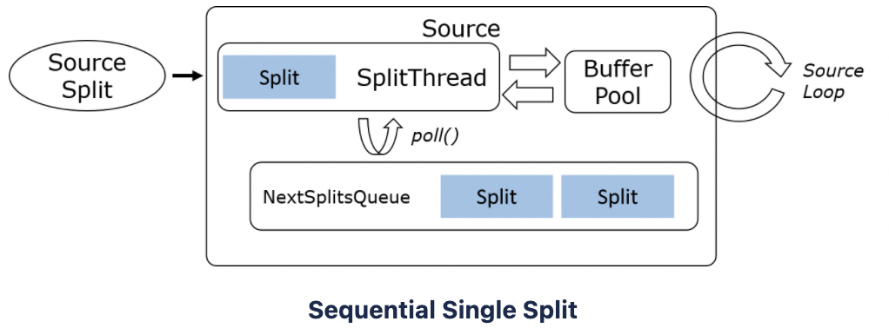
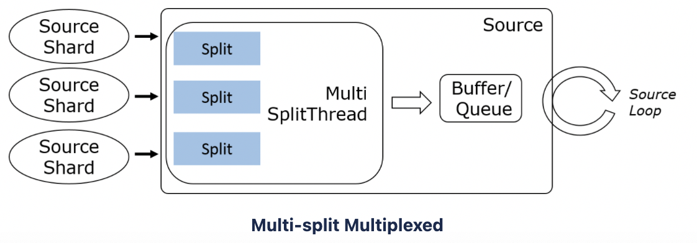
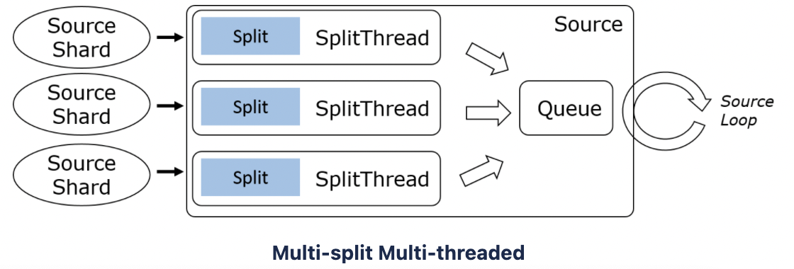

FLIP-27: Refactor Source Interface ，是对 SourceFunction 的重构，旨在解决 SourceFunction 中存在的几个痛点。SplitEnumerator 负责发现并 split，SourceReader 负责读取 split 的实际数据。也是批流一体 API 推进的产物。
重构动机
先前的 SourceFunction 存在以下几个痛点：
- split 的发现逻辑（work discovery）和实际读取数据的逻辑耦合在 SourceFunction 和 DataStream 接口中，导致 sourcce 实现的复杂度
- 批处理和流处理需要实现不同的 source
- partitions/shards/splits 等概念没有在接口中显示定义，使得很难以独立于源的方式实现事件时间对齐、分区 watermark 、动态 split 分配 、work stealing 等功能
- checkpoint 锁由 SourceFunction 占有，导致框架难以优化
- 没有通用框架，意味着每个 source 都要实现一个复杂的线程模型，增加了新 source 实现及测试的难度
总体设计
发现读取分离
Source 端有两个主要组件：
- SplitEnumerator: 发现并分配 split (files, partitions 等)
SplitEnumerator 仅运行一次，非并行的，未来可以考虑并行化。通常运行在 JobManager 上，或者作为 TaskManager 上的单任务。
在 File Source 中， SplitEnumerator 列举出所有文件；
在 Kafka Source 中，SplitEnumerator 查询出 kafka 需要读取的所有分区； - Reader: 读取 splits 中的真实数据
从分配到的 splits 中读取数据。可以一个接一个的读取有界 splits ，也可以并发读取多个 splits。
这两个组件组成了核心功能，主要的 Source 接口是一个创建 split enumerators 和 readers 的工厂：

统一批流 API
任意 source 都应该既能作为 batch source ，也能作为 streaming source 。有界性是 source 接口的内在属性，大多数情况下，仅 SplitEnumerator 需要识别有界性属性，而 SplitReaders 不需要。
1 | StreamExecutionEnvironment env = StreamExecutionEnvironment.getExecutionEnvironment(); |
通用 enumerator-reader 通信机制
SplitEnumerator 和 SourceReader 都有各自的实现类，两个组件之间需要通信，在二者之间引入了一种通用的消息传递机制。
需要在 JobMasterGateway 和 TaskExecutorGateway 中分别实现 RPC 方法。消息传递栈如下图：
SourceCoordinator 和 SourceOperator 作为上图中 OperatorCoordinator 和 Operator 针对 FLIP-27 的实现，其类图和时序图如下：
SourceEvent 是在 SplitEnumerator 和 SourceReader 之间传递消息的接口，OperatorEvent 是在 OperatorCoordinator 和 Operator 之间传递消息的接口。
在这个 FLIP 中，SourceCoordinator 将是封装 SplitEnumerator 的 OperatorCoordinator 的实现。
1 | public interface JobMasterGateway { |
1 | public interface TaskExecutorGateway extends RpcGateway { |
SplitEnumerator
1 | public interface SplitEnumerator<SplitT extends SourceSplit, CheckpointT> |
1 | public interface SplitEnumeratorContext<SplitT extends SourceSplit> { |
1 | public final class SplitsAssignment<SplitT extends SourceSplit> { |
SourceReader 抽象
首先，看下 Flink 的 Source 核心接口被设计地非常通用，但是 Reader 的实现复杂。
1 | public interface Source<T, SplitT extends SourceSplit, EnumChkT> extends Serializable { |
因此，在 FLIP-27 中封装了一个抽象类来提供更简单的接口以允许阻塞调用，SourceReaderBase 作为 SourceReader 的一个抽象实现，基于生产者消费者模式，提供了主线程和内部读取线程之间的同步机制。用户只需专注于：
- 自定义 SourceReader (继承 SourceReaderBase)
- 从外部系统获取记录（实现 SplitReader 接口）
- 发送数据到下游 (实现 RecordEmitter 接口)
- watermark 相关处理
SourceReaderBase
SourceReaderBase 的工作流程如下图：
- 当 SplitEnumerator 将一个新的 split 分配给 SourceReader ，SourceReader 先为该 split 初始化 state ，再经过 SplitFetcherManager -> SplitFetcher -> SplitReader 分配到指定的 SplitReader
- 外部数据经过 SplitReader -> SplitFetcher.elementQueues -> SourceReaderBase.elementQueues -> RecordsWithSplitIds
-> RecordEmitter ，数据批形式地入队列出队列，性能更好 - SourceReaderBase 遍历每一条数据，并查询数据对应的 split state ，二者会通过 RecordEmitter 发送到下游
SourceReaderBase 类的关键属性和方法：
1 | public abstract class SourceReaderBase<E, T, SplitT extends SourceSplit, SplitStateT> |
SplitReader
大多数 readers 可以分为以下几类：
- 顺序单 split （file，数据库查询，大多数有界 splits）
 - 多 split 多路 （Kafka，Pulsar，Pravega…）
 - 多 split 多线程 (Kinesis…)

SourceReader 实现如下接口中的方法，fetch 和 handleSplitsChanges 需要在相同线程中执行，无需在 connector 中进行任何并发处理。
1 | public interface SplitReader<E, SplitT extends SourceSplit> { |